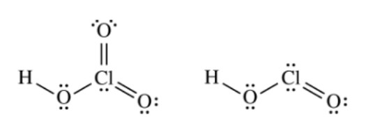

The Lewis electron-dot diagrams of the \(\ce{HClO3}\) molecule and the \(\ce{HClO2}\) molecule are shown above at the left and right, respectively.
Which of the following statements identifies the stronger acid and correctly identifies a factor that contributes to its being the stronger acid?
For oxyacids, the more oxygens present, the stronger the acid.
This is because as the number of oxygen atoms increases, the stronger the dipole moment. The oxygen atoms draw the electron density away from the hydrogen, therefore weakening the bond. This makes it more likely for the acid to dissociate.
Though this description is not given as an answer choice, we can infer that the
conjugate base is more stable since the hydrogen is released from a weak bond. If the \(\ce{O-H}\) bond was strong and broken,
the resulting base would be unstable.